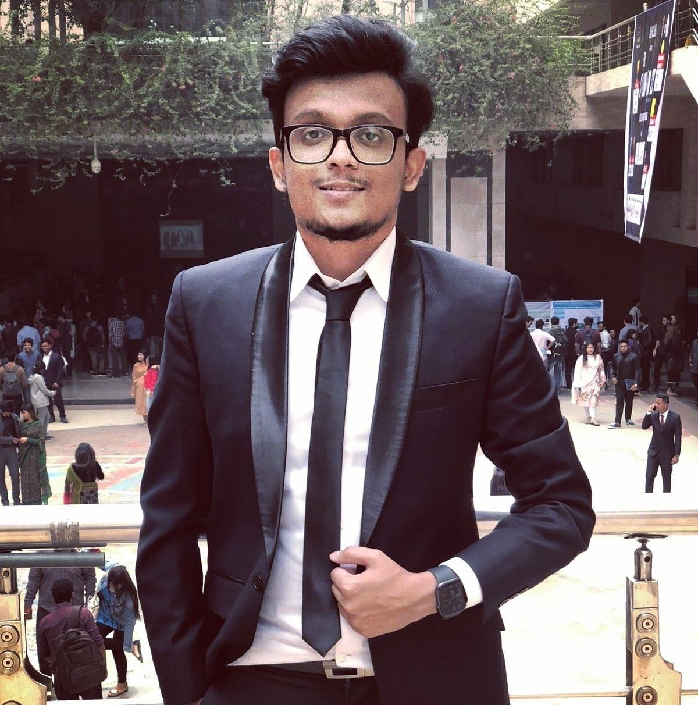

|  | Mufrad MustahsinEmail- mufradmustahsin152@gmail.com Linkedin- Linkedin Profile Facebook-Facebook Profile Contact Number- +8801684214201 |
Dedicated, passionate and competent ‘AI Programmer’. Possess hands-on expertise in writing codes as well as desiging complex neural networks in different programming languages.
MAY 2015- 2020
Overall CGPA: 3.00 out of 4.00
CGPA IN EEE MAJOR CAPSTONE DESIGN PROJECTS: 3.89 out of 4.00
2013-2014
I was enrolled in that program for 4 active semesters. But the program was not what I expected.
So I switched my major to EEE and got enrolled in NSU.
PASSING YEAR: 2012
Major: Science
GPA: 5 Out Of 5
PASSING YEAR: 2010
Major: Science
GPA: 5 Out Of 5
◼ Junior Capstone Design:
Automatic Solar Pump Control for Irrigation
GPA: 4.00 out of 4.00
◼ Senior Capstone Design:
A P300 Brain Computer Interface Based Virtual Simulation Platform for
Physically Impaired Person
GPA: 3.85 out of 4.00
◼ An SSVEP Brain Computer Interface Based 7-DOF Robotic Arm Simulation Platform for Physically Impaired People
◼ Thermal Imaging and Mask Detection Surveillance AI Robot
◼ Solving Various Space Tasks in ISS Kibo Module Using Astrobee Space Robot Simulation in Robot Operating System
◼ Cisco Certified Network Associate | AIUB Institue of Continuing Education
August 2020- Present
◼ The Complete 2020 Web Development Bootcamp | Udemy
October 2020 - Present
◼ Stemx365: General Member
August 2020- Present
◼ Institute of Electrical and Electronics Engineers (IEEE)
2018- Present
Industry Knowledge::
Tools & Technologies:
Powerbuzz
Feb 9th 2018- Feb 10th 2018
Logistics Assistant, Line Manager
Issued: October 2020
Issued: July 2020
Issued: July 2020
Issued: June 2020
Issued: June 2020
Issued: October 2020
Issued: November 2020
Issued: December 2020
Issued: November 2020
Issued: November 2020
July 2020- Present
Kibo Robot Programming Challenge is an educational competition to solve various
given problems by using real robots in the International Space Station (ISS). This
program is hosted by the Japan Aerospace Exploration Agency (JAXA) in cooperation
with the National Aeronautics and Space Administration (NASA).
48 teams from 27 institutes from Bangladesh will fight in the Qualification Round!
Currently, our team, Xdawn, which is being led by me, is at the top of the leaderboard in Bangladesh
Dec 2019
The Innovation Challenge is organized every semester for the graduating students of
the ECE department who have completed the 2-semester long project through
CSE/EEE/ETE499A and 499B. Here, they showcase their project outcomes to the
faculty experts and industry professionals. From 120 teams, the top 10 were selected
as participants to showcase their project which were judged by faculties and industry
professionals. Our team, led by me, secured the forth position in this very competitive challenge.
Project Supervisor
Assistant Professor
Phd, Dept. Of Electrical And Computer Engineering, National University Of Singapore
B. Sc. In Electrical & Electronic Engineering, Bangladesh University Of Engineering And Technology
Email: dihan.hasan@northsouth.edu
Website: Google Scholar
Project Coordinator, KIBO RPC
Psychiatric Epidemiologist
New York State Psychiatric Institute
Former Researcher ,Harvard Medical School,USA
Email: sabajamin@gmail.com
TEL: (646)-774-5742
Astrobee/SPHERES Research Scientist
Zero Robotics System Admin and Architect, MIT
Chief Program Coordinator and Technical Adviser of KRPC Bangladesh, MOST
Department of Aeronautics & Astronautics
77 Massachusetts Avenue
Cambridge, MA 02139
Tel: (469) 734-1058, mizanul@mit.edu